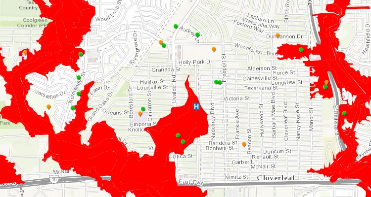
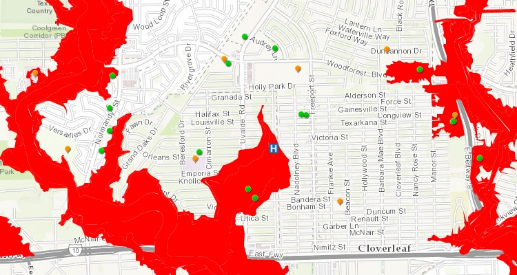

GIS Specialist
Alexandria, VA
jd.franco.caballero@gmail.com
703-401-1926
Skills
ArcGIS Platform
HTML+CSS
Javascript
Database Administration
Languages
English
Spanish
•Accelerated mapping processes by developing cartographic layouts, formats, and design standards
•Decreased data delivery time by creating SQL Databases containing third-party data accessible through Power BI
•Reduced human errors by refining mapping workflows with the addition of automated scripts
•Deployed ArcGIS Server technology to update paper-based departmental reports into web applications and to develop and maintain web mapping tools
•Designed and administered website for the Research and Evaluation team
•Onboarded and trained new employees in mapping execution and delivery
•Supported both clients and colleagues with troubleshooting and technical assistance
•Devise quality plans for various fiber optic networks based on preexisting designs and consultations with telecommunications corporations, including Telefónica and Jazztel, utilizing Geographic Information Systems (GIS).
• Create architectural layout maps by visiting each potential fiber optic host site and conducting surveys of buildings and surrounding properties.
• Build strong customer relationships through on-site collaboration with future fiber optic users.
•Worked during 280 hours with the client (Spanish National Police) to update mapping systems and databases.
•Utilized GIS applications to develop reports and programs.
Bachelor's Degree, Topographic engineering - Final Thesis
Computer Programming, Java, ASP.NET and Oracle


HOLC Analysis
This report illuminates the consequences of the most important history underlying cities in the United States today: the history of redlining.
City of Alexandria Parcel Values
An overview of the parcel values in the city of Alexandria, VA.
Banking Deserts in America
An Overview of Bank Branch Closures from 2008 through 2016 and their impact.
Home Purchase Loans Dashboard
Home Purchase Loans Dashboard.
MANNA Property Map
Since its founding in 1982, MANNA has developed almost 1,200 units of affordable housing. In this map you can find projects that MANNA has developed to help underserved members of the DC community move up the economic ladder.
 

Hurricane Harvey
Houston Texas is suffering from catastrophic flooding as a result of Hurricane Harvey, which landed on Friday, August 25, 2017. This is the third consecutive year that Houston has had flooding in 500-year floodplains areas.
Hurricane Irma
This map tool shows sustained high winds and flooding driven by the surging waters, and their relationship with vulnerable populations.

Side by Side Maps
This app compares side by side Bank Branches, Home Purchase loans, Small Business loans, and Congressional Districts information.
Massachusetts
FHA Lending in Massachusetts.
As well as being a Senior GIS Specialist, I am a proud native of Spain. Originally from Navalmoral de la Mata, a small town near Spain and Portugal’s border, I attended college in Madrid. As Spain’s capital and the largest city in the country, Madrid has the third-largest GDP in the European Union and contributes in many ways to worldwide trends in politics, media, fashion, culture, entertainment and much more. Having now lived in the US for almost three years with my American wife, I have been able to meet people from all different countries and I very much enjoy and respect learning about and exploring other people’s cultures and traditions.
"GIS is a form of digital mapping technology. Kind of like Google Earth, but better."
Arnold Schwarzenegger at the Government Technology Conference’s 2008 Conference on California’s Future.
Lets get in touch and talk about you and your next project.